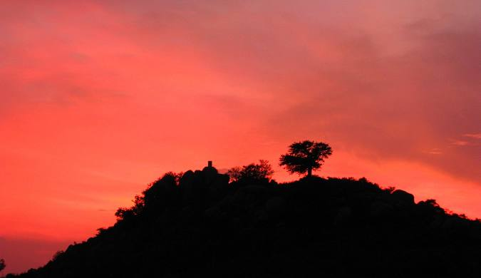

Exploring the area around your college can be a great way to unwind and make the most of your time here. Whether you're looking for scenic spots, shopping destinations, or places to hang out with friends, here are some must-visit locations near campus:
Historical Places
Vellore Fort
Approx. 5 km from campus
A historic fort with beautiful architecture and rich history. Houses the Jalakandeswarar Temple, a stunning example of Dravidian architecture.
Photography
History
Temple
Golden Temple (Sripuram)
Approx. 10 km from campus
Famous for its intricate gold-coated design and peaceful surroundings. A must-visit for spiritual experiences and architectural appreciation.
Spiritual
Architecture
Nature & Outdoors
Amirthi Zoological Park
Approx. 25 km from campus
Features a small waterfall, hiking trails, and wildlife. Perfect weekend getaway for nature lovers.
Hiking
Waterfall
Wildlife

Yelagiri Hills
Approx. 90 km from campus
Weekend getaway with trekking trails, a lake, and pleasant climate. Ideal for group trips.
Trekking
Lake
Group Trip
Cafes & Hangouts
Darling Namma Veedu
Within 2 km
Great South Indian meals at affordable prices
Aurobindo Café
Within 3 km
Cozy café with good coffee and snacks
Café Coffee Day (CCD)
Within 2 km
Popular hangout spot for students
Hundreds Heritage
Within 5 km
Fancier dining option for special occasions
Shopping & Entertainment
Vellore Lakshmi Cinemas
Within 3 km
Catch the latest movies with friends
Vellore Bazaar
Within 4 km
Bustling market for budget shopping
VIT Main Market
Within 1 km
From stationery to late-night snacks, everything you need